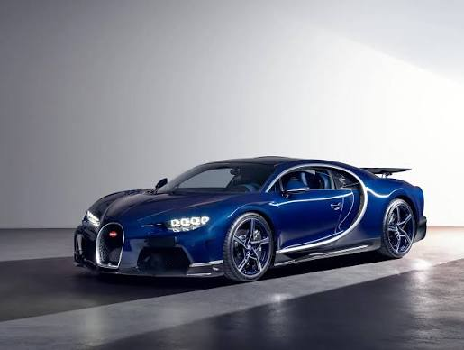
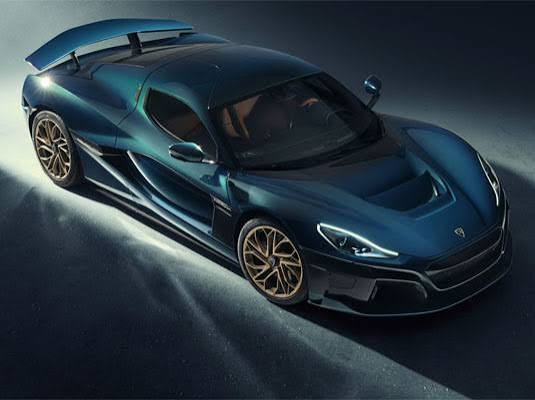
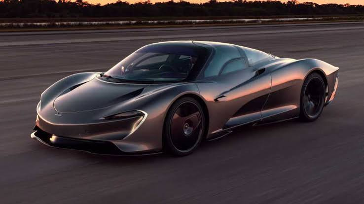
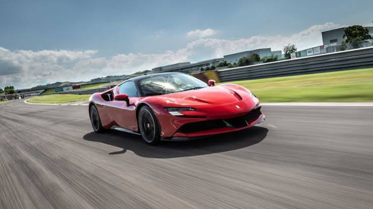

Самые быстрые автомобили
Список самых быстрых автомобилей








Koenigsegg Jesko Absolut в Энгельхольме, Швеция
Шведский гиперкар, созданный с единственной целью — преодолеть барьер максимальной скорости. Автомобиль оснащен 5,0-литровым двигателем V8 с двойным турбонаддувом, развивающим до 1600 лошадиных сил на топливе E85.
Вместо массивного антикрыла версия Absolut использует два вертикальных стабилизатора, которые улучшают стабильность движения на прямых и снижают лобовое сопротивление до рекордных показателей.
Каждая деталь гиперкара разработана для поддержания курсовой устойчивости на скоростях свыше 500 км/ч. Вместо антикрыла на автомобиле установлены два вертикальных плавника, вдохновленных конструкцией реактивных истребителей.
Девятиступенчатая трансмиссия Light Speed Transmission (LST) собственной разработки Koenigsegg позволяет переключать передачи практически мгновенно, минуя промежуточные ступени. Монокок полностью изготовлен из углеродного волокна и сотового заполнителя, обеспечивая высочайшую прочность.
Rimac Nevera в Света-Неделе, Хорватия
Электрический гиперкар из Хорватии, ставший рекордсменом по динамике разгона. Силовая установка состоит из четырех независимых электромоторов, суммарно выдающих колоссальные 1914 лошадиных сил.
Автомобиль способен разгоняться с 0 до 100 км/ч за невероятные 1,81 секунды, а его максимальная скорость достигает 412 км/ч. Название происходит от мощного и стремительного шторма, возникающего над Адриатическим морем.
Интеллектуальная система распределения крутящего момента All-Wheel Torque Vectoring совершает более 100 вычислений в секунду для каждого колеса, гарантируя идеальное сцепление с дорогой на любом покрытии.
Батарейный блок емкостью 120 кВт·ч встроен непосредственно в углепластиковый монокок, что существенно увеличивает жесткость конструкции. Разработка и сборка всех ключевых компонентов ведутся на фабрике в Света-Неделе.
Hennessey Venom F5 в Сили, Техас, США
Американский гиперкар, созданный с бескомпромиссным акцентом на достижение предельной скорости. Под капотом установлен 6,6-литровый двигатель V8 Fury с двойным турбонаддувом, развивающий рекордные 1817 лошадиных сил.
Название F5 отсылает к наивысшей категории категории шкалы Фудзиты для торнадо, где скорость ветра превышает 400 км/ч, что подчеркивает экстремальный характер автомобиля.
Кузов и монокок автомобиля полностью сделаны из углеволокна, благодаря чему масса машины составляет всего 1360 килограммов.
Инженеры из компании Hennessey проектировали аэродинамику с минимальным коэффициентом лобового сопротивления для преодоления отметки в 500 км/ч. Каждая деталь сборки производится вручную на производственной площадке в Техасе.